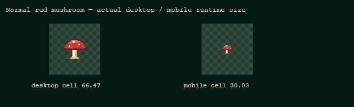
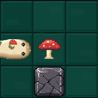
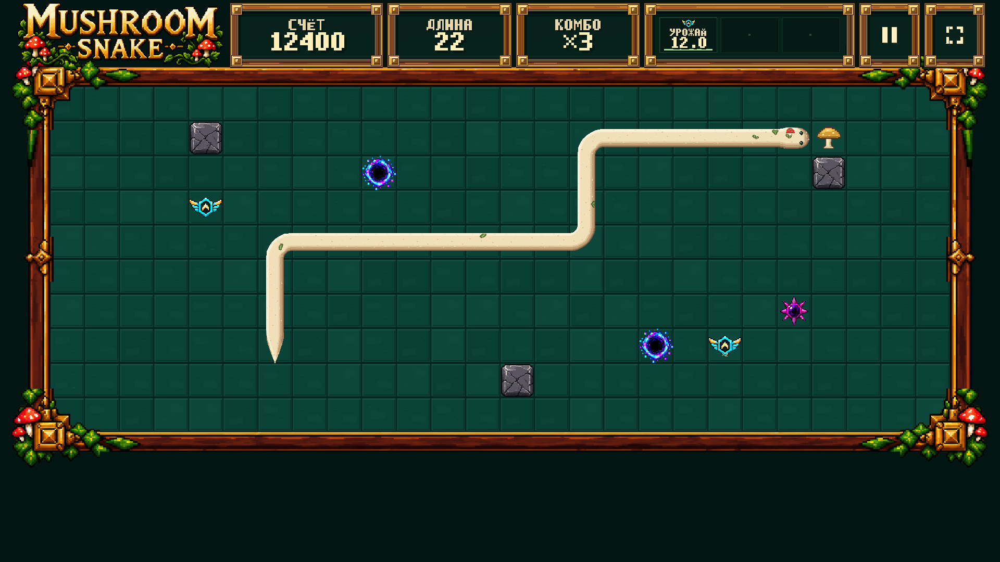
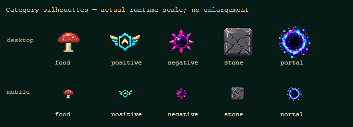
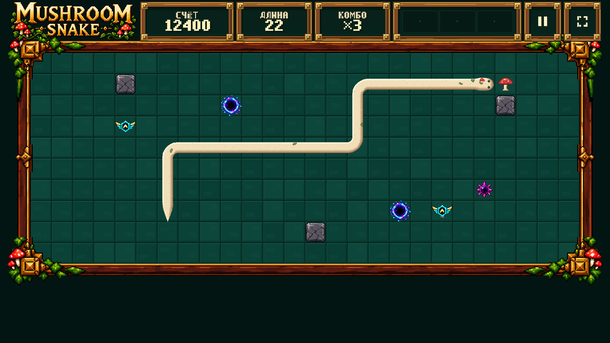
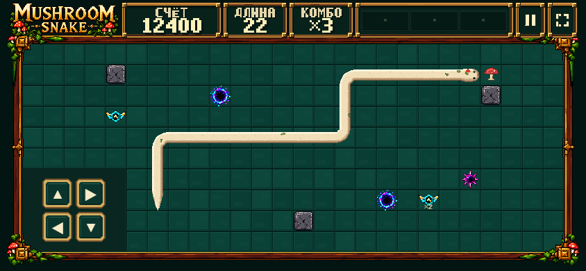

Forest V3 composition approved / locked: 764e180. Только gameplay-object presentation, red/golden food и короткий food pop. Snake V5.6, cabinet/HUD/floor/arena, collision/simulation/scoring/speed/portal FSM и audio сохранены.
Root cause: positive 88×54 принудительно рисовался квадратом. Теперь у каждого object один uniform scale, centered contain, собственный visualScale. Existing positive/negative/stone/portal art не заменялся.
STOP for human review. Ровно шесть images, displayed 1:1 при browser zoom 100%, без shrink-to-fit. Крупные captures прокручиваются горизонтально. Сцены — frozen QA fixture: length22 / score12400 / combo×3.
Targeted QA: 34/34; реальные canvas draws uniform; locked bounding boxes unchanged; one real mushroom pickup → length9 / score100 / atomic replacement; pause/resume и D-pad PASS. Console/network/404 = 0 в новых contexts. Подробный report · Raw evidence + 1366×768 · Local DEV Training. Никакой публикации.
| Object | Intrinsic px | Aspect | visualScale | Desktop rendered px | Mobile rendered px |
|---|---|---|---|---|---|
| Red mushroom | 48×43 | 1.1163 | 0.70 | 46.526×41.679 | 21.020×18.830 |
| Golden mushroom | 48×43 | 1.1163 | 0.70 | 46.526×41.679 | 21.020×18.830 |
| Positive — Focus / Harvest | 88×54 | 1.6296 | 0.96 | 63.807×39.154 | 28.828×17.690 |
| Negative — Rush | 72×72 | 1.0000 | 0.86 | 57.160×57.160 | 25.825×25.825 |
| Stone | 64×64 | 1.0000 | 0.94 | 62.477×62.477 | 28.227×28.227 |
| Portal | 128×128 | 1.0000 | 1.00 | 66.465×66.465 | 30.029×30.029 |
Cell: desktop 66.4654 px, mobile 30.0287 px. Anchor всех objects (0.5,0.5), offset (0,0). Размеры округлены только в таблице, actual draw использует точный единый scale.


Harvest даёт ×2 award согласно существующей механике; gold — только состояние food visual. Истечение эффекта возвращает red.



